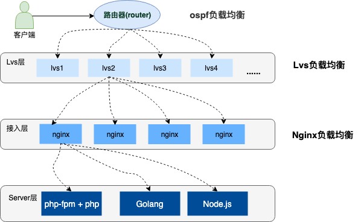
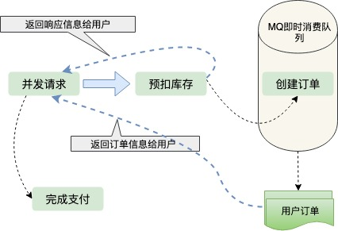
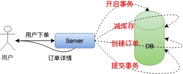
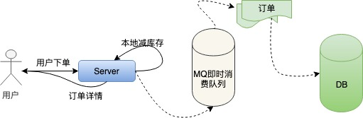
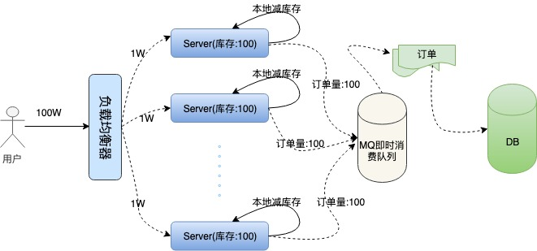
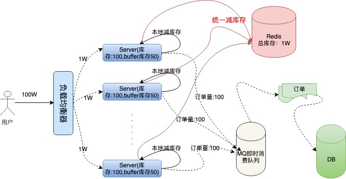

12306抢票,极限并发带来的思考?
12306抢票,极限并发带来的思考?
每到节假日期间,一二线城市返乡、外出游玩的人们几乎都面临着一个问题：抢火车票!虽然现在大多数情况下都能订到票,但是放票瞬间即无W票的场景，相信大家都深有体会。尤其是春节期间，大家不仅使用12306，还会考虑“智行”和其他的抢票软件,全国上下几亿人在这段时间都在抢票。“12306服务”承受着这个世界上任何秒杀系统都无法超越的QPS,上百万的并发再正常不过了！笔者专门研究了一下“12306”的服务端架构,学习到了其系统设计上很多亮点，在这里和大家分享一下并模拟一个例子：如何在100万人同时抢1万张火车票时，系统提供正常、稳定的服务。
1. 大型高并发系统架构
高并发的系统架构都会采用分布式集群部署，服务上层有着层层负载均衡，并提供各种容灾手段(双火机房、节点容错、服务器灾备等)保证系统的高可用,流量也会根据不同的负载能力和配置策略均衡到不同的服务器上。下边是一个简单的示意图:

1.1 负载均衡简介
上图中描述了用户请求到服务器经历了三层的负载均衡，下边分别简单介绍一下这三种负载均衡：
- OSPF(开放式最短链路优先)是一个内部网关协议(Interior Gateway Protocol,简称IGP)。OSPF通过路由器之间通告网络接口的状态来建立链路状态数据库，生成最短路径树，OSPF会自动计算路由接口上的Cost值，但也可以通过手工指定该接口的Cost值，手工指定的优先于自动计算的值。OSPF计算的Cost，同样是和接口带宽成反比，带宽越高，Cost值越小。到达目标相同Cost值的路径，可以执行负载均衡，最多6条链路同时执行负载均衡。
- LVS (Linux VirtualServer)，它是一种集群(Cluster)技术，采用IP负载均衡技术和基于内容请求分发技术。调度器具有很好的吞吐率，将请求均衡地转移到不同的服务器上执行，且调度器自动屏蔽掉服务器的故障，从而将一组服务器构成一个高性能的、高可用的虚拟服务器。
- Nginx想必大家都很熟悉了,是一款非常高性能的http代理/反向代理服务器,服务开发中也经常使用它来做负载均衡。Nginx实现负载均衡的方式主要有三种:轮询、加权轮询、ip hash轮询，下面我们就针对Nginx的加权轮询做专门的配置和测试
1.2 Nginx加权轮询的演示
Nginx实现负载均衡通过upstream模块实现，其中加权轮询的配置是可以给相关的服务加上一个权重值，配置的时候可能根据服务器的性能、负载能力设置相应的负载。下面是一个加权轮询负载的配置，我将在本地的监听3001-3004端口,分别配置1，2，3，4的权重:
1 | #配置负载均衡 |
我在本地/etc/hosts目录下配置了 www.load_balance.com 的虚拟域名地址，接下来使用Go语言开启四个http端口监听服务，下面是监听在3001端口的Go程序,其他几个只需要修改端口即可：
1 | package main |
我将请求的端口日志信息写到了./stat.log文件当中，然后使用ab压测工具做压测:
1 | ab -n 1000 -c 100 http://www.load_balance.com/buy/ticket |
统计日志中的结果，3001-3004端口分别得到了100、200、300、400的请求量，这和我在nginx中配置的权重占比很好的吻合在了一起，并且负载后的流量非常的均匀、随机。具体的实现大家可以参考nginx的upsteam模块实现源码，这里推荐一篇文章：Nginx 中 upstream 机制的负载均衡
2.秒杀抢购系统选型
回到我们最初提到的问题中来：火车票秒杀系统如何在高并发情况下提供正常、稳定的服务呢？
从上面的介绍我们知道用户秒杀流量通过层层的负载均衡，均匀到了不同的服务器上，即使如此，集群中的单机所承受的QPS也是非常高的。如何将单机性能优化到极致呢？要解决这个问题，我们就要想明白一件事：
通常订票系统要处理生成订单、减扣库存、用户支付这三个基本的阶段，我们系统要做的事情是要保证火车票订单不超卖、不少卖，每张售卖的车票都必须支付才有效，还要保证系统承受极高的并发。这三个阶段的先后顺序改怎么分配才更加合理呢?我们来分析一下：
2.1 下单减库存
当用户并发请求到达服务端时，首先创建订单，然后扣除库存，等待用户支付。这种顺序是我们一般人首先会想到的解决方案，这种情况下也能保证订单不会超卖，因为创建订单之后就会减库存，这是一个原子操作。但是这样也会产生一些问题，第一就是在极限并发情况下，任何一个内存操作的细节都至关影响性能，尤其像创建订单这种逻辑，一般都需要存储到磁盘数据库的，对数据库的压力是可想而知的；第二是如果用户存在恶意下单的情况，只下单不支付这样库存就会变少，会少卖很多订单，虽然服务端可以限制IP和用户的购买订单数量，这也不算是一个好方法。
2.2 支付减库存
如果等待用户支付了订单在减库存，第一感觉就是不会少卖。但是这是并发架构的大忌，因为在极限并发情况下，用户可能会创建很多订单，当库存减为零的时候很多用户发现抢到的订单支付不了了，这也就是所谓的“超卖”。也不能避免并发操作数据库磁盘IO
2.3 预扣库存
从上边两种方案的考虑，我们可以得出结论：只要创建订单，就要频繁操作数据库IO。那么有没有一种不需要直接操作数据库IO的方案呢，这就是预扣库存。先扣除了库存，保证不超卖，然后异步生成用户订单，这样响应给用户的速度就会快很多；那么怎么保证不少卖呢？用户拿到了订单，不支付怎么办？我们都知道现在订单都有有效期，比如说用户五分钟内不支付，订单就失效了，订单一旦失效，就会加入新的库存，这也是现在很多网上零售企业保证商品不少卖采用的方案。订单的生成是异步的,一般都会放到MQ、kafka这样的即时消费队列中处理,订单量比较少的情况下，生成订单非常快，用户几乎不用排队。

3. 扣库存的艺术
从上面的分析可知，显然预扣库存的方案最合理。我们进一步分析扣库存的细节，这里还有很大的优化空间，库存存在哪里？怎样保证高并发下，正确的扣库存，还能快速的响应用户请求？
在单机低并发情况下，我们实现扣库存通常是这样的:

为了保证扣库存和生成订单的原子性，需要采用事务处理，然后取库存判断、减库存，最后提交事务，整个流程有很多IO，对数据库的操作又是阻塞的。这种方式根本不适合高并发的秒杀系统。
接下来我们对单机扣库存的方案做优化：本地扣库存。我们把一定的库存量分配到本地机器，直接在内存中减库存，然后按照之前的逻辑异步创建订单。改进过之后的单机系统是这样的:

这样就避免了对数据库频繁的IO操作，只在内存中做运算，极大的提高了单机抗并发的能力。但是百万的用户请求量单机是无论如何也抗不住的，虽然nginx处理网络请求使用epoll模型，c10k的问题在业界早已得到了解决。但是linux系统下，一切资源皆文件，网络请求也是这样，大量的文件描述符会使操作系统瞬间失去响应。上面我们提到了nginx的加权均衡策略，我们不妨假设将100W的用户请求量平均均衡到100台服务器上，这样单机所承受的并发量就小了很多。然后我们每台机器本地库存100张火车票，100台服务器上的总库存还是1万，这样保证了库存订单不超卖,下面是我们描述的集群架构:

问题接踵而至，在高并发情况下，现在我们还无法保证系统的高可用，假如这100台服务器上有两三台机器因为扛不住并发的流量或者其他的原因宕机了。那么这些服务器上的订单就卖不出去了，这就造成了订单的少卖。要解决这个问题，我们需要对总订单量做统一的管理，这就是接下来的容错方案。服务器不仅要在本地减库存，另外要远程统一减库存。有了远程统一减库存的操作，我们就可以根据机器负载情况，为每台机器分配一些多余的“buffer库存”用来防止机器中有机器宕机的情况。我们结合下面架构图具体分析一下:

我们采用Redis存储统一库存，因为Redis的性能非常高，号称单机QPS能抗10W的并发。在本地减库存以后，如果本地有订单，我们再去请求redis远程减库存，本地减库存和远程减库存都成功了，才返回给用户抢票成功的提示,这样也能有效的保证订单不会超卖。当机器中有机器宕机时，因为每个机器上有预留的buffer余票，所以宕机机器上的余票依然能够在其他机器上得到弥补，保证了不少卖。buffer余票设置多少合适呢，理论上buffer设置的越多，系统容忍宕机的机器数量就越多，但是buffer设置的太大也会对redis造成一定的影响。虽然redis内存数据库抗并发能力非常高，请求依然会走一次网络IO,其实抢票过程中对redis的请求次数是本地库存和buffer库存的总量，因为当本地库存不足时，系统直接返回用户“已售罄”的信息提示，就不会再走统一扣库存的逻辑，这在一定程度上也避免了巨大的网络请求量把redis压跨，所以buffer值设置多少，需要架构师对系统的负载能力做认真的考量。
4. 代码演示
Go语言原生为并发设计，我采用go语言给大家演示一下单机抢票的具体流程。
4.1 初始化工作
go包中的init函数先于main函数执行，在这个阶段主要做一些准备性工作。我们系统需要做的准备工作有：初始化本地库存、初始化远程redis存储统一库存的hash键值、初始化redis连接池；另外还需要初始化一个大小为1的int类型chan,目的是实现分布式锁的功能，也可以直接使用读写锁或者使用redis等其他的方式避免资源竞争,但使用channel更加高效，这就是go语言的哲学：不要通过共享内存来通信，而要通过通信来共享内存。redis库使用的是redigo，下面是代码实现:
1 | ... |
4.2 本地扣库存和统一扣库存
本地扣库存逻辑非常简单，用户请求过来，添加销量，然后对比销量是否大于本地库存，返回bool值:
1 | package localSpike |
注意这里对共享数据LocalSalesVolume的操作是要使用锁来实现了，但是因为本地扣库存和统一扣库存是一个原子性操作，所以在最上层使用channel来实现，这块后边会讲。统一扣库存操作redis，因为redis是单线程的，而我们要实现从中取数据，写数据并计算一些列步骤，我们要配合lua脚本打包命令，保证操作的原子性:
1 | package remoteSpike |
我们使用hash结构存储统一库存和总销量的信息,请求过来，判断总销量是否大于库存，然后返回相关的bool值。在启动服务之前，我们需要初始化redis的初始库存信息:
1 | hmset ticket_hash_key "ticket_total_nums" 10000 "ticket_sold_nums" 0 |
4.3 响应用户信息
我们开启一个http服务，监听在一个端口上:
1 | package main |
上面我们做完了所有的初始化工作，加下来handleReq的逻辑非常清晰，判断是否抢票成功，返回给用户信息就可以了。
1 | package main |
前边提到我们扣库存时要考虑静态条件，我们这里是使用channel避免并发的读写，保证了请求的高效顺序执行。我们将接口的返回信息写入到了./stat.log文件方便做压测统计。
4.4 单机服务压测
开启服务，我们使用ab压测工具进行测试：
1 | ab -n 10000 -c 100 http://127.0.0.1:3005/buy/ticket |
下面是我本地低配mac的压测信息
1 | This is ApacheBench, Version 2.3 <$Revision: 1826891 $> |
根据指标显示，我单机每秒就能处理4000+的请求，正常服务器都是多核配置，处理1W+的请求根本没有问题。而且查看日志发现整个服务过程中，请求都很正常，流量均匀，redis也很正常：
1 | //stat.log |
5.总结回顾
总体来说，秒杀系统是非常复杂的。我们这里只是简单介绍模拟了一下单机如何优化到高性能，集群如何避免单点故障，保证订单不超卖、不少卖的一些策略，完整的订单系统还有订单进度的查看，每台服务器上都有一个任务，定时的从总库存同步余票和库存信息展示给用户,还有用户在订单有效期内不支付，释放订单，补充到库存等等。
我们实现了高并发抢票的核心逻辑，可以说系统设计的非常的巧妙，巧妙的避开了对DB数据库IO的操作，对Redis网络IO的高并发请求，几乎所有的计算都是在内存中完成的，而且有效的保证了不超卖、不少卖，还能够容忍部分机器的宕机。我觉得其中有两点特别值得学习总结：
- 负载均衡，分而治之。通过负载均衡，将不同的流量划分到不同的机器上，每台机器处理好自己的请求，将自己的性能发挥到极致，这样系统的整体也就能承受极高的并发了，就像工作的的一个团队，每个人都将自己的价值发挥到了极致，团队成长自然是很大的。
- 合理的使用并发和异步。自epoll网络架构模型解决了c10k问题以来，异步越来被服务端开发人员所接受，能够用异步来做的工作，就用异步来做，在功能拆解上能达到意想不到的效果，这点在nginx、node.js、redis上都能体现，他们处理网络请求使用的epoll模型，用实践告诉了我们单线程依然可以发挥强大的威力。服务器已经进入了多核时代，go语言这种天生为并发而生的语言，完美的发挥了服务器多核优势，很多可以并发处理的任务都可以使用并发来解决，比如go处理http请求时每个请求都会在一个goroutine中执行，总之:怎样合理的压榨CPU,让其发挥出应有的价值，是我们一直需要探索学习的方向。
本文标题：12306抢票,极限并发带来的思考?
文章作者：小师
发布时间：2019-12-08
最后更新：2022-05-04
原始链接：chunlife.top/2019/12/08/12306抢票-极限并发带来的思考/
版权声明：本站所有文章均采用知识共享署名4.0国际许可协议进行许可